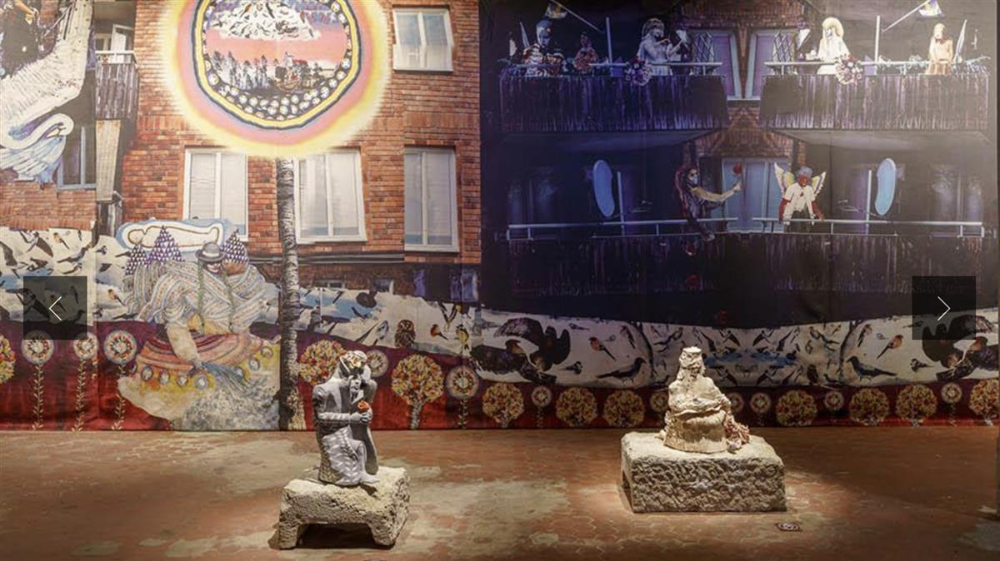
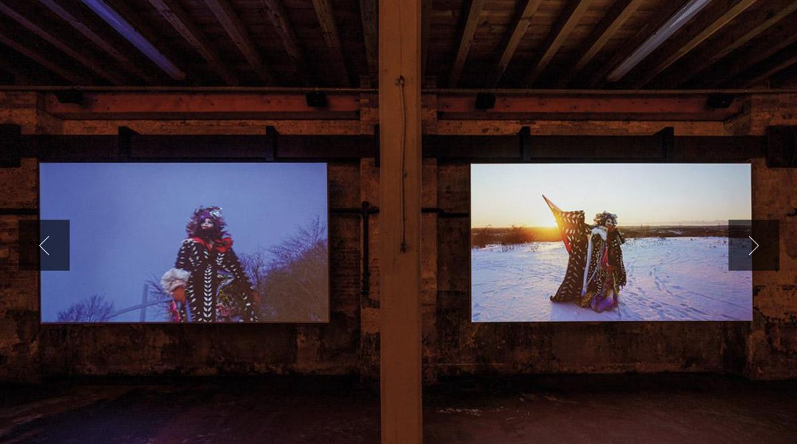

ON SOURCE: La Biennale di Venezia
Cosmonación
Chile
Commissioner: Florencia Loewenthal
Curator: Andrea Pacheco González
Exhibitor:Valeria Montti Colque
Venue: Magazzino n. 42, Marina Militare, Arsenale di Venezia, Fondamenta Case Nuove 2738/C

One of the greatest challenges facing governments in the coming decades will be to address the problems associated with the archaic construct of the nation with contemporary tools. Although a solid European intellectual architecture has defended this unity of territorial organisation, it is nationalism that remains a political pathology that becomes an obstacle to the evolution of our civilisation. In the twenty-first century, the nation continues to be a “cultural artefact” (Anderson) that feeds on fantasy and is sustained by emotion.
Valeria Montti Colque was born in Stockholm, in 1978, two years after her parents fled the Chilean military dictatorship and settled there as part of Sweden’s institutional commitment to Salvador Allende’s overthrown government. She grew up outside of Stockholm, in a municipality that in the mid-1990s was home to a diverse displaced community. This particular social coexistence was the source that fuelled her work from the beginning. Her works abound with unidentifiable entities, collage-bodies, mestizo subjectivities that create animated objects, traversing colourful landscapes, in constant transit, always travelling.
We have borrowed the term “cosmonation” from the anthropologist Michel S. Laguerre, who states that diasporic communities do not sever relations with their homeland, but remain linked to their ancestral places by material, affective and spiritual ways. Diasporic communities inhabit a cosmonation that unifies geographically distant territories.

SOURCE: La Biennale di Venezia